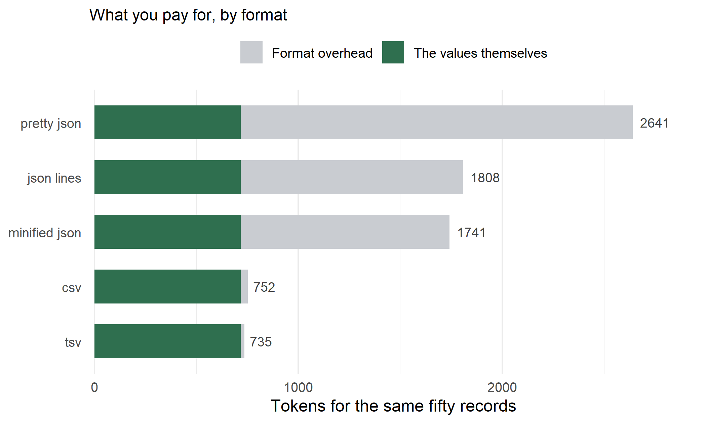

Structured output is how most people call a model now. You define a schema, you get back JSON, your parser is happy, and nobody looks at the bill closely enough to notice that a large share of those output tokens are punctuation and repeated field names rather than answers.
Here is a fifty row extraction, the kind of thing an LLM pipeline produces constantly, priced five ways.
library(reticulate)
library(jsonlite)
enc <- import("tiktoken")$get_encoding("o200k_base") # GPT-4o and later
ntok <- function(s) length(enc$encode(s))
set.seed(1)
n <- 50
recs <- data.frame(
product_name = paste("Item", sprintf("%03d", 1:n)),
unit_price_usd = round(runif(n, 5, 500), 2),
quantity_in_stock = sample(0:400, n, TRUE),
product_category = sample(c("kitchen", "outdoor", "apparel", "tools"), n, TRUE),
is_currently_active = sample(c(TRUE, FALSE), n, TRUE),
stringsAsFactors = FALSE
)row_json <- function(d) apply(d, 1, function(r) toJSON(as.list(r), auto_unbox = TRUE))
delim <- function(d, sep) paste(c(paste(names(d), collapse = sep),
apply(d, 1, paste, collapse = sep)), collapse = "\n")
fmts <- c(
pretty_json = toJSON(recs, pretty = TRUE, auto_unbox = TRUE),
minified_json = toJSON(recs, pretty = FALSE, auto_unbox = TRUE),
json_lines = paste(row_json(recs), collapse = "\n"),
csv = delim(recs, ","),
tsv = delim(recs, "\t")
)
tk <- sapply(fmts, ntok)
res <- data.frame(format = names(tk), tokens = as.integer(tk),
vs_tsv = round(tk / tk[["tsv"]], 2), row.names = NULL)
res[order(-res$tokens), ]
## format tokens vs_tsv
## 1 pretty_json 2641 3.59
## 3 json_lines 1808 2.46
## 2 minified_json 1741 2.37
## 4 csv 752 1.02
## 5 tsv 735 1.00Identical information. The same fifty products, the same five fields, the same values. Pretty printed JSON costs 3.6 times what tab separated text costs.
Rather than guess, decode every token in the pretty printed payload and classify it.
ids <- enc$encode(fmts[["pretty_json"]])
pieces <- vapply(ids, function(i) enc$decode(list(i)), character(1))
trimmed <- trimws(pieces)
kind <- ifelse(trimmed == "", "whitespace",
ifelse(grepl('^[][{}",:]+$', trimmed), "punctuation", "content"))
round(100 * table(kind) / length(ids), 1)
## kind
## content punctuation whitespace
## 45.0 34.2 20.8Forty five percent of what you paid for is content. The rest is structure: braces, quotes, colons, commas, and the indentation that makes it readable to a human who is never going to read it.
Whitespace is easy to remove. The harder cost is that a JSON array repeats every key name once per record, and that share stays flat no matter how much data you ask for.
mk <- function(n) {
set.seed(1)
data.frame(product_name = paste("Item", sprintf("%03d", 1:n)),
unit_price_usd = round(runif(n, 5, 500), 2),
quantity_in_stock = sample(0:400, n, TRUE),
product_category = sample(c("kitchen","outdoor","apparel","tools"), n, TRUE),
is_currently_active = sample(c(TRUE, FALSE), n, TRUE),
stringsAsFactors = FALSE)
}
key_tokens <- sum(sapply(names(recs), function(k) ntok(paste0('"', k, '"'))))
scale_tbl <- do.call(rbind, lapply(c(1, 5, 20, 100, 500), function(n) {
total <- ntok(toJSON(mk(n), auto_unbox = TRUE))
data.frame(records = n, tokens = total,
key_tokens = key_tokens * n,
key_share = paste0(round(100 * key_tokens * n / total), "%"))
}))
scale_tbl
## records tokens key_tokens key_share
## 1 1 37 24 65%
## 2 5 177 120 68%
## 3 20 697 480 69%
## 4 100 3473 2400 69%
## 5 500 17359 12000 69%Sixty nine percent, and it settles there by about twenty records and never falls again. A schema
is paid once and amortizes across a long response.
Key names do not. You pay for product_category five hundred times in a five hundred row answer,
and the fraction of your bill going to those five words is the same as it was at one row.
Shortening them is the obvious lever, and it is worth exactly what you would expect.
short <- mk(n)
names(short) <- c("name", "price", "qty", "cat", "active")
c(descriptive = ntok(toJSON(mk(n), auto_unbox = TRUE)),
short = ntok(toJSON(short, auto_unbox = TRUE)),
saved_pct = round(100 * (1 - ntok(toJSON(short, auto_unbox = TRUE)) /
ntok(toJSON(mk(n), auto_unbox = TRUE)))))
## descriptive short saved_pct
## 1741 1241 29
Figure 1: The same fifty records, five ways. The dark part of each bar is the values themselves, tokenized as bare rows. Everything to the right of it is what the format charges to carry them.
The instinct is to blame the schema you send in the request. It is usually not the problem.
keys <- names(recs)
schema <- toJSON(list(
type = "object",
properties = setNames(lapply(keys, function(k)
list(type = "string", description = paste("The", gsub("_", " ", k), "of the product"))), keys),
required = keys), auto_unbox = TRUE, pretty = TRUE)
c(schema_tokens = ntok(schema),
equivalent_records_of_output = round(ntok(schema) / ntok(toJSON(mk(1), auto_unbox = TRUE)), 1))
## schema_tokens equivalent_records_of_output
## 188.0 5.1A verbose schema with descriptions costs about five records worth of output, once. If you are extracting fifty rows, the schema is noise and the repeated keys are the signal.
Cost is not the only axis, and this post only measured cost.
Descriptive key names plausibly help the model produce correct values, and qty may well be
filled in worse than quantity_in_stock. Constrained decoding modes buy you a guaranteed parse,
which is worth real money in avoided retries. Asking for TSV means writing your own parser and
handling the case where a value contains a tab.
None of that was tested here. Do not shorten your keys on the strength of a 29% token saving without checking whether accuracy moved. The useful conclusion is not that JSON is bad. It is that the format is a priced decision that most teams have never actually priced.
tiktoken tells you
whether structure is 20% of your bill or 55%.The same reasoning applies to the input side, where the text itself can cost far more than it should for reasons that have nothing to do with the format. That is the Unicode normalization problem, and it is a bigger multiplier than anything here.
Prompt construction, structured extraction, and the engineering decisions that quietly change what a model costs and returns are covered in AI in Action.